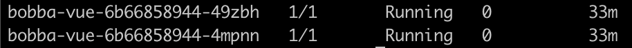
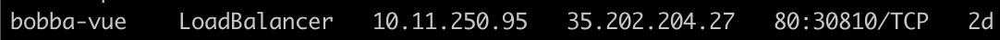

Deploying the front 🖼️
Like the API we will deploy the front in the same way
Run the command below which should looks like what we did with Minikube
kubectl create -f gcp/deployment/front.yml
If everything is running correctly. Run the command
kubectl get pods
And you should see the list of pods related to your deployments like the image below

Wait a few minutes …
And run the command
# svc is an alias for services
kubectl get svc
You should get the list of available services. And most notably an ExternalIP for our LoadBalancer that use the front project like the screen below
